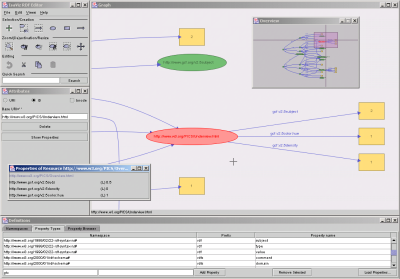

IsaViz is a visual environment for browsing and authoring RDF models represented as graphs. It features:
IsaViz 2.0 alpha - preview release (2003-05-12)
IsaViz 2.0 alpha preview release 1 is now available as a full distribution. See changes for information on new features, and read the GSS User Manual to learn how to create Graph Stylesheets.
IsaViz 2.0 alpha - preview release (2003-04-15)
The source code of IsaViz 2.0, with support for RDF datatypes and GSS (Graph Stylesheets) is available for download through the W3C's public CVS repository. This version represents a very early stage in the development cycle of IsaViz 2.0 : it is still missing many functionalities and only partially implements GSS. Moreover, there might be a significant number of bugs at this point. Note: IsaViz 2.0 alpha relies upon Jena 2 (preview 2) and is not compatible with earlier versions of Jena.
Sesame Plug-In v0.1 for IsaViz released (2003-04-11)
Aidministrator released the first version of a Sesame plug-in for IsaViz, which makes it possible to read/write RDF data directly from/to a Sesame server. The plug-in is very easy to install and to use, and can be downloaded from the Sesame Sourceforge Project page.
Important Note (2003-03-07)
Several people have encountered difficulties importing local RDF files in IsaViz 1.2 (this will also be true for version 2.0): the model is not loaded, and the following error message is generated:
RDFErrorHandler.error: com.hp.hpl.jena.rdf.arp.MalformedURIException: No scheme found in URI.
The source of this error is a bad Defaut Base URI in your preferences (e.g. "online"). To correct this, select Edit/Preferences, and set the Default Base URI value to blank or to the well-formed URI of your choice.
IsaViz Version 1.2 released (2003-02-13)
This new relase supports the Last Call Working Draft specifications issued by the RDF Core Working Group, except for datatypes which are ignored for the moment (this release of IsaViz is based on Jena 1.6.1). It also features new graphical capabilities such as enhanced zooming, a back button and a radar view for easier navigation in large graphs. It also offers better support for internationalization and several bug fixes. See changes for a complete list of new features and improvements.
|  | |
More screenshots are available. | |
Latest stable version: 1.2
| Binary distribution (zip file, 5.4 Mb) | isaviz-bin-1_2.zip |
| Binary distribution (tarball, 5.4 Mb) | isaviz-bin-1_2.tar.gz |
| Source distribution (tarball, 5.7 Mb) | isaviz-src-1_2.tar.gz |
| Older versions | |
Development version: 2.0-alpha-1 (latest source code available through the W3C's public CVS repository).
You will also need to download graphviz/dot for your specific platform (version 1.7.6 or later, but version 1.8.x or later strongly recommended and mandatory if you are installing IsaViz 2.0).
Finally, as IsaViz is implemented in Java, it requires a JVM (Java Virtual Machine) 1.3.0 or later (1.4.0 or later strongly recommended - see Known problems) since the GUI makes extensive use of Java2D which featured poor performances in JVM 1.2.x. The latest JVM from Sun can be downloaded at http://java.sun.com/j2se/1.4/
The Sesame plug-in makes it possible to read/write RDF data directly from/to a Sesame server. It can be downloaded freely from the Sesame Sourceforge Project page.
Installation instructions contain information on how to install and configure IsaViz, including requirements for additional software versions. You should read these as they contain important instructions regarding GraphViz/dot which is not included in the distribution.
A User Manual describing all features of IsaViz is also available, as well as a User Manual for Graph Stylesheets (GSS).
If you want to make comments, bug reports or simply ask a question, use the following mailing list: www-isaviz@w3.org. To subscribe to the list, send an e-mail to www-isaviz-request@w3.org with subscribe in the subject header. See http://www.w3.org/Mail/Request for more details. An archive of messages sent to the list is available.
IsaViz is developed by Emmanuel Pietriga.
The first version was developed in collaboration with Xerox Research Centre Europe which also contributed XVTM, the ancestor of ZVTM (Zoomable Visual Transformation Machine) upon which IsaViz is built. It also includes software developed by:
and makes use of the GraphViz library developed by AT&T Research.
The Sesame plug-in is developed by Aidministrator.
Emmanuel Pietriga |
{kind=link}
{kind=link}
{kind=link}
{kind=link}